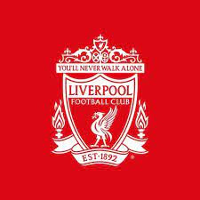

История клуба Liverpool FC

1892 г. Создан футбольный клуб «Ливерпуль».
3 июня 15 марта 1892 года Джон Хоулдинг лихо вышел из правления
«Эвертона», чтобы сформировать новый клуб — «Ливерпуль». Клуб был
официально признан Советом по торговле 3 июня, что сделало его
официальным днем рождения.
1901 г. Красные впервые стали чемпионами 29 апреля
Всего через восемь лет после вступления в Футбольную лигу футбольный клуб «Ливерпуль» поднялся на вершину английской игры, завоевав титул, который задал тон будущим поколениям на «Энфилде».
1923 г. Триумфальный титул подряд 21 апреля
Несмотря на то, что менеджер Дэвид Эшворт решил вернуться в бывший клуб «Олдхэм Атлетик» в середине сезона, «Ливерпуль» выиграл чемпионат, опередив «Сандерленд» на шесть очков. Олдхэм был в конце лиги на момент возвращения Эшворта и действительно продолжал страдать от вылета.
1959 г. Шенкли подписал контракт с «Энфилдом»
1 декабря Дата, которая навсегда войдет в анналы истории «Энфилда» — футбольный клуб «Ливерпуль» объявил Билла Шенкли преемником Фила Тейлора на руководящем посту. В то время никто не знал, что «красные» вот-вот вступят в свою самую захватывающую эру. Посредственность второго дивизиона вскоре должна была уйти в прошлое, поскольку Шанкс приступил к изменению состояния клуба. Поддержка «Ливерпуля» уже никогда не будет прежней
2005 г. Чудо Стамбула 25 мая
В самую невероятную ночь в истории клуба в копилку трофеев «Энфилда» добавили пятый Кубок европейских чемпионов. Подопечные Рафаэля Бенитеса проигрывают «Милану» со счетом 3:0 в перерыве показательного матча турнира в Стамбуле, но блестяще справляются с ничьей во втором периоде, а затем выигрывают по пенальти.
«Ливерпуль» продан NESV
15 октября New England Sports Ventures (NESV) объявляет о завершении сделки по покупке футбольного клуба «Ливерпуль». Продажа NESV, позже известной как Fenway Sports Group, которая владеет портфелем компаний, включая Boston Red Sox, New England Sports Network и Roush Fenway Racing, была согласована 6 октября.
2015 Юрген Клопп возглавил «Энфилд»
8 октября Футбольный клуб «Ливерпуль» объявляет о назначении Юргена Клоппа новым менеджером клуба. Немец прибывает на «Энфилд» с успешным послужным списком, созданным в дортмундской «Боруссии».
1 июня 2019
«Ливерпуль» выиграл свой шестой Кубок европейских чемпионов, обыграв «Тоттенхэм Хотспур» со счетом 2: 0 в финале Лиги чемпионов в Мадриде.
25 июня 2020
«Ливерпуль» выигрывает свой первый титул в Премьер-лиге в 2020 году — это их 19-й чемпионат в общем зачете — закрепляя корону за семь оставшихся матчей.